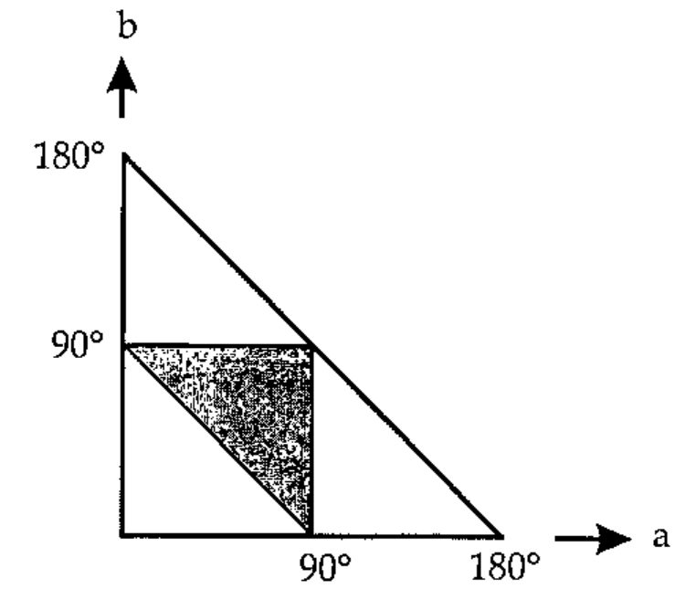

J-ottings 37: How many obtuse-angled triangles are there?
Vector 20:1, page 38
Transcribed from the printed issue; not yet reviewed. Read it in the PDF of the issue, page 38
In the world, that is. Lots, I know, but let me be more precise and ask what proportion of all triangles in the world are obtuse-angled? You might suggest that since only two of the angles, say a and b, of a triangle can be determined independently, the set of all possible triangles is denumerable with points contained within the large right-angled triangle in the diagram below

and further, since the acute-angled ones are denumerable with the points within the shaded triangle, it follows that 75% of all triangles are obtuse-angled. Well, let’s ask J and see whether he/she/it (as far as I am aware J has not yet been honoured with an official gender) agrees.
Assume first that a point is represented by a 2-list of numbers such as 4 7. The verb py calculates the square of the distance between two such points :
py=.(+/@:*:@:-/)"2 NB. square of dist btwn 2 points
py 4 7,:1 3 NB. py applied to a 3,4,5 triangle
25
A triangle is a 3-list of 2-lists (points). To calculate the squares of the three sides first select the points in pairs, and then apply py, :
sides =.(0 1;1 2;0 2)&({&>)@< NB. select point pairs
]t=.3 2$_3 _2 _1 6 0 2 NB. specimen triangle
_3 _2
_1 6
0 2
sides t
_3 _2
_1 6
_1 6
0 2
_3 _2
0 2
py sides t NB. squares of three sides of triangle
68 17 25
A triangle is obtuse if the square of the largest side exceeds the sum of the squares of the other two, so define ifbig1 to test whether the largest of a set of numbers is greater than the sum of all the others :
This leads naturally to
To generate random triangles centred on the origin, construct lists like t using an integer which determines the coordinate resolution. This should be big enough to minimise the inaccuracy arising from the fact that ? returns integers :
Everything is now in place to test a single random triangle with given resolution :
so this particular triangle was acute-angled. Here are a thousand trials at a higher resolution :
and a few more :
+/trial1&>1000$10000
721
+/trial1&>1000$10000
738
+/trial1&>10000$10000 NB. increase the number of trials
7251
By now you should be getting a feel for where the true value lies, namely somewhere between 72 and 73 per cent. Here is a summary of the J verbs used in this simulation :
py=.(+/@:*:@:-/)"2 NB. sq of dist btwn 2 points
sides=.(0 1;1 2;0 2)&({&>)@< NB. 3 sides each a pt.pair
ifbig1=.({.>+/@}.)@\:~ NB. 1 if biggest > +/rest
obtest=.ifbig1@:py@sides NB. 1 if obtuse, 0 if not
rt1=.-~ ?@>:@+:@(3 2&$) NB. rand trngle in[-y.,y.]
trial1=.obtest@rt1 NB. obtuseness test
Another way to conduct the simulation is to generate random angles rather than random sides. Start by writing a verb which generates a number of random values (angles) between 0 and 2π:
rnd=.(%~?)@(1e9&(#~)) NB. y.random uniform (0,1) s
pi2=.o.2 NB. pi/2 = 6.28319
ra=.*&pi2@rnd NB. y. random angles in (0,pi2)
ra 6
4.97256 1.18961 0.688103 3.88122 5.97772 5.69835
The sines and cosines of each angle generate a point within the unit circle, and so random angles can be transformed to random points within the unit circle by :
cs=.o.~/&2 1@ra NB. cos/sine s of y. random angles
cs 3
_0.0880986 0.996112
_0.23431 _0.972162
_0.772602 _0.63489
and then to random triangles in a circle with radius y. by
rt2=.3 :'y.*cs 3' NB. rand trgle in circle radius y.
rt2 100
37.8875 92.5448
_48.1939 87.6205
71.0356 _70.3843
The apparatus is already in place for determining whether these triangles are obtuse or not, and for doing some more experiments :
A little bit higher than our previous estimate, but close to the theoretical 75%. Maybe sampling from a square frame includes disproportionately many ‘skinny’ acute angled triangles which have one vertex tucked into one of the far corners. To test this conjecture, sample the co-ordinates within a square but accept only those triangles all of whose points lie inside the largest inscribed circle. The final line of rt3 embodies recursively the "accept-reject" technique which is common in simulation practice :
ssq=.+/@:*: NB. sum of squares
rt3=.3 :0 NB. reject if one pt. between circle and square
r=.rt1 y.
while. +./(*:y.)<ssq"1 r do.r=.rt3 y.end.
)
As before, everything else is already in place for the next experiment :
Not much different from trial1 – ah well, that’s one conjecture gone for a bang!
Another accept-reject technique for random triangles consists of generating the values of three random sides in order, and rejecting the result if the sides fail to form a triangle because one of them is bigger than the sum of the other two :
rt4=.3 :0 NB. reject if one side > sum of other 2
r=.>:?3$y. NB. select three random sides in [1,y.]
while.ifbig1 r do. r=.rt4 y. end.
)
Since rt4 returns lengths of sides, the obtuseness test is simply ifbig1 applied to the squares of the sides :
Seems I’ve mislaid nearly 20% of the world’s obtuse angled triangles (careless of me!).Another possibility based on sides is to choose two sides at random, say these were 6 and 10. The range of acceptable values for a third side is then from 10-6 to 10+6, or more generally from m-n to m+n where m and n are the lengths of the sides in decreasing order. The third side can then be taken as (m-n) plus a number drawn at random from 0 to 2n :
choose2=.\:~@(?,?) NB. two sides chosen at random
third=., -/+?@>:@+:@{: NB. join feasible random 3rd side
rt5=.third@:choose2 NB. random triangle
trial5=.ifbig1@:*:@rt5 NB. test for obtuse
+/trial5&>10000$10000
7263
+/trial5&>10000$10000
7324
That’s better – but let’s get back to the question. How many obtuse-angled triangles did I say there were…..?